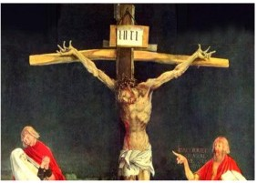

This is as much as we may assert with a high probability of accuracy: Jesus was born in Nazareth (a backward village so insignificant it is not mentioned once in the Hebrew Scriptures or Josephus) to Mary and Joseph (Joseph is never heard from again) around 4 BCE, and had siblings - both brothers and sisters (Mk 3:3)
He was born and raised as a Jew, though the area of Galilee had recently been forcibly converted to Judaism by Aristobolus I in 104 BCE, so the Jewish genealogy of Jesus’ family is subject to question. Jesus was most probably trained to be a tekton - carpenter, or construction worker of some sort, and seems to have been drawn to the apocalyptic teaching of his “cousin” (Luke 1:36, 57-60), John the Baptist. Indeed, in Matthew, Jesus’ first recorded preaching (4:17 “Repent: for the kingdom of heaven is at hand.”) is a direct quote from John, and Jesus seems to have wanted to fulfill John’s expectation of a Messiah. He began his ministry in his native Galilee, but was not well received either by his family (Mk 3:21, Mk 3:30, John 7:5), or the neighboring towns of Galilee (Mk 6:1, Lk 4:28, Mt 11:20 (=Lk10:13). Though the chief Galilean cities of Cepherus and Tiberius were within walking distance, Jesus is never recorded as having gone there. He was a prophet without honor (Mk 6:3), who had no home (Mt 8, Lk 9, John 15:18).
Much in the mold of Isaiah, he shared John’s contempt for the Pharisees (Jews who emphasize scrupulous adherence to the letter of the Law, often overlooking its spirit) and Sadducees (elitist priests of the Temple in Jerusalem, who collaborated with the Roman authorities), and was concerned for the long-suffering common people.
Around 30 CE, he went to Jerusalem at Passover, apparently to cement his reputation as a prophet and to make his Apocalyptic point, perhaps even to incite an armed uprising. He overturned the tables of money-changers and, as intended, attracted the unfavorable attention of the Jewish and Roman authorities by disrupting Temple activities and preaching the imminent revolution.

Grünewald Crucifixion 1512